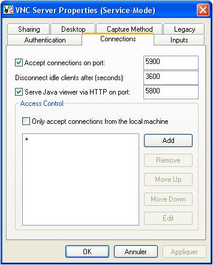

Je vais vous apprendre dans ce tutoriel à utiliser VNC.
Vous pouvez ainsi aider et vous faire aider à distance. Je l'utilise depuis plusieurs mois, et je n'ai jamais eu de problème avec ce logiciel. Il existe aujourd'hui en version 4.1.2.
Proceed to Download (vous n'avez pas à remplir les formulaires).
Choisissez ensuite VNC Free Edition for Windows en prenant l'exécutable ou l'archive suivant vos envies.
Cochez I accept... et cliquez sur Download.
Ensuite, pour l'installation
Next
I accept... et cliquez sur Next.
Choisissez le répertoire d'installation (utilisateurs confirmés), ou laissez celui par défaut.
Choisissez le type d'installation (VNC server, pour installer le serveur ; VNC viewer, pour installer le logiciel permettant d'accéder aux autres PC).
Cliquez sur Next, à moins que vous ayez envie de changer le nom du raccourci dans le menu démarrer.
Pour les deux premières options, la première permet de créer une icône VNC sur le bureau, la deuxième permet d'en créer une dans la barre d'accès rapide, à droite du menu démarrer).
Vous voilà en possession de VNC, pour le moment tout est simple.
VNC Viewer : démarrer > Tous les programmes > RealVNC > VNC Viewer 4 > Run VNC Viewer .
VNC Serveur : démarrer > Tous les programmes > RealVNC > VNC Server 4 (User-Mode) > Run VNC Server.
L'accès au PC
Pour avoir l'accès à un PC, il faut que VNC soit démarré (cf. plus haut). Ensuite vous entrez l'IP de la personne dans la case serveur puis vous faites OK. Si la personne en question a mis un mot de passe, vous devez le rentrer. Ensuite, après un petit temps de chargement, une fenêtre apparaitra, montrant le bureau de l'utilisateur d'en face.
VNC Serveur, plus en détail
Voyons voir les différentes options du VNC serveur. Pour accéder à sa configuration, il faut faire un clic droit sur l'icône en bas à droite puis cliquer sur option.
Les options barrées en noir ne sont pas importantes, je n'ai pas à vous les décrire, je ne vous décrirai que les options Authentification, Connections et Inputs.
Cette option est très importante : elle permet de mettre un mot de passe pour l'accès de votre machine. No authentification précise qu'il n'y aura pas de mot de passe, VNC Password Authentification, qui est recommandé, permet d'en mettre un. Les autres options, en dessous, ne sont pas très importantes.

Dans la partie Connections des options, vous trouverez des endroits pour changer le port par défaut de VNC (5900 pour vnc, 5800 pour VNC2SWF). Vous pouvez aussi contrôler les connexions (pratique en entreprise, par exemple).
Les options Inputs, autrement dit d'autorisation, sont très importantes : elles permettent de définir ce que peut faire, ou non, un utilisateur.
Accept pointer events from clients : pour autoriser ou non que l'utilisateur connecté à l'ordinateur puisse bouger la souris.
Disable local inputs while server is in use :
(Cette option est décochée par défaut.)
Je n'ai pas détaillé les autres options, elles ne sont pas utiles.
Pour le pare-feu Windows, la première solution consiste à l'enlever, tout simplement. Cette solution est loin d'être la meilleure, mais personnellement, je n'ai pas d'antivirus ni de pare-feu, et en 2 ans d'utilisation de mon PC, je n'ai JAMAIS eu de problème.
Pour le désactiver, il faut faire ceci :
Panneau de configuration > Pare-feu Windows > Désactiver (NON RECOMMANDÉ).
Pare-feu, 2e solution
La deuxième solution consiste à autoriser RealVNC. Pour ceci, il faut exécuter la démarche suivante :
Panneau de configuration > Pare-feu Windows > onglet : Exceptions.
Puis il faut cliquer sur Ajouter port, il vous faudra alors ajouter les ports suivants :
Il faut que vous alliez à l'adresse de configuration de votre routeur : http://192.168.1.1 . Le mot de passe par défaut est login : admin ; pass : admin.
Après être entré dans la configuration de votre routeur, vous devez aller dans l'onglet Serveurs Lan. Pour ajouter un port, cliquez sur Ajouter et remplissez ainsi :
Nom du serveur : à votre guise (VNC TCP 5900, par exemple) Accès Activé : Oui Protocole : TCP Du port : 5900 Au port : 5900 Adresse ip locale : Le champ est rempli automatiquement.
Nom du serveur : à votre guise (VNC TCP 5800, par exemple) Accès Activé : Oui Protocole : TCP Du port : 5800 Au port : 5800 Adresse ip locale : Le champ est rempli automatiquement.
Nom du serveur : à votre guise (VNC UDP 5900, par exemple) Accès Activé : Oui Protocole : UDP Du port : 5900 Au port : 5900 Adresse ip locale : Le champ est rempli automatiquement.
Nom du serveur : à votre guise (VNC UDP 5800, par exemple) Accès Activé : Oui Protocole : UDP Du port : 5800 Au port : 5800 Adresse ip locale : Le champ est rempli automatiquement.
Terminal Triway (alicebox)
Il faut que vous alliez à l'adresse de configuration de votre routeur : http://192.168.1.1 . Le mot de passe par défaut est login : tiscali ; pass : tiscali.
Après être rentrés dans la configuration de votre routeur, vous devez aller sur le lien NAT port redirect. Pour ajouter un port, cliquez sur Add et remplissez ainsi :
Public Port From : 5900 Public Port To : 5900 Protocol : TCP Local Address : L'adresse IP de votre ordinateur sur le réseau Local Port From : 5900 Local Port To : 5900
Public Port From : 5900 Public Port To : 5900 Protocol : UDP Local Address : L'adresse IP de votre ordinateur sur le réseau Local Port From : 5900 Local Port To : 5900
Public Port From : 5800 Public Port To : 5800 Protocol : TCP Local Address : L'adresse IP de votre ordinateur sur le réseau Local Port From : 5800 Local Port To : 5800
Public Port From : 5800 Public Port To : 5800 Protocol : UDP Local Address : L'adresse IP de votre ordinateur sur le réseau Local Port From : 5800 Local Port To : 5800
Club-Internet (Merci à luigifab)
Il faut que vous alliez à l'adresse de configuration de votre routeur : http://192.168.1.1 .
Puis, lorsque vous êtes arrivé dans la configuration de votre routeur, cliquez sur Onglet Advanced Setup, puis sur NAT. Ensuite cliquez sur Add, sélectionnez Custom Server, puis suivez les ports suivants :
External Port Start : 5800 External Port End : 5800 Protocol : TCP / UDP Local Address : L'adresse IP de votre ordinateur sur le réseau
External Port Start : 5900 External Port End : 5900 Protocol : TCP / UDP Local Address : L'adresse IP de votre ordinateur sur le réseau
Puis, cliquez sur Save/Apply et redémarrez votre routeur.
Freebox
Vous pouvez accéder à votre freebox à l'adresse suivante. Vous devez ensuite lui ajouter les ports suivants.
Port
Protocole
Adresse IP locale
Port
5900
TCP
Vous devez y mettre votre adresse IP sur le réseau (192.168.XXX.XXX)
5900
5900
UDP
Vous devez y mettre votre adresse IP sur le réseau (192.168.XXX.XXX)
5900
5800
TCP
Vous devez y mettre votre adresse IP sur le réseau (192.168.XXX.XXX)
5800
5800
UDP
Vous devez y mettre votre adresse IP sur le réseau (192.168.XXX.XXX)
5800
Autres routeurs
Je n'ai pas encore d'autres routeurs pour vous décrire la marche à suivre, mais je peux vous décrire en général comment faire. Il faut que vous accédiez à votre routeur, ensuite chercher quelque chose comme son pare-feu de votre. Vous devrez ajouter les ports cités ci-dessus.
Ce logiciel est compliqué d'utilisation et très capricieux. Si un jour vous demandez à votre copain d'accéder à votre PC et que ça ne marche pas, essayez les différentes étapes suivantes.
Si vous avez installé un antivirus dernièrement
Il faut que vous cherchiez dans la configuration de votre antivirus pour ouvrir les ports cités dans la partie précédente.
Vous avez remis votre routeur à zéro
Il faut que vous rouvriez les ports cités dans la partie "Configuration Routeur".
Si après ça, ça ne marche toujours pas, essayez la méthode suivante
Avec les livebox, l'IP locale que vous avez change souvent (c'est souvent le cas, même avec d'autres routeurs). Il faut donc que vous supprimiez les ports dans votre livebox et que vous les rajoutiez avec les mêmes paramètres que ceux cités dans "Configuration Routeur".
Voilà, j'espère vous avoir aidé dans votre familiarisation avec l'outil très puissant qu'est RealVNC.